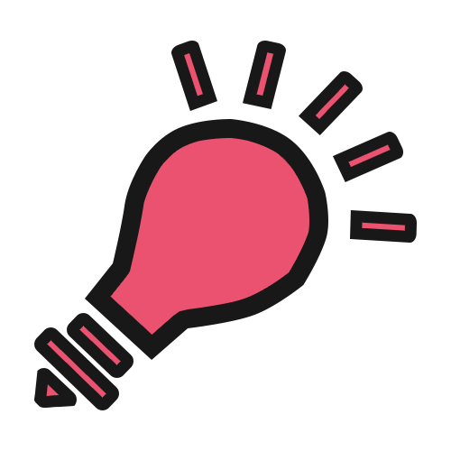

While currently studying in computer science at UIUC, I designed class projects such as Mini Yelp, Death of Pablo, etc. Out of classes, I am an selected mentee of PURE program, UX designer of ONTOKIDS, researcher of data-driven research group.
I DO DESIGN

I design website free lancing by photoshop. I also understand the importance of user experience in the process of designing and coding. I like creating short vilm using adobe affect to either speaking for myself or adding some flavors for my website.
I DO TEAMWORK
I enjoy team-working and having fun with people. As one of ILLINI 4000 team members, I cycled from New York to San Fransico and fighting for cancer research during 2015 summer. I also love invloving in various group projects and love cooperating with various people with different roles.